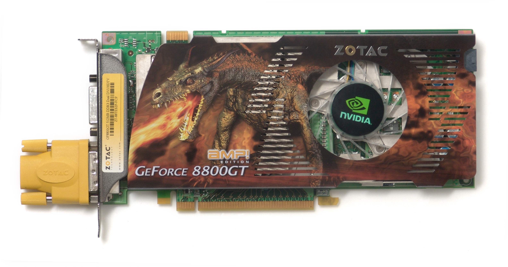

GraficasAMP
Historia
Las tarjetas gráficas AMP son una muestra inconfundible de potencia y velocidad. Aunque significa "Amplificar,” las tarjetas gráficas GAMING con etiquetado AMP están preparadas para más velocidad, mejor rendimiento y una potencia más uniforme, lista para usar.
La primera tarjeta gráfica original que se presentó con el distintivo AMP surgió en 2008: GeForce 8800 GT AMP. De este modo, ofrecer una experiencia “más veloz” a todos los usuarios con overclocking de fábrica era una noción sobre la que antes no se había escuchado. Nuestros equipos de ingeniería, dedicados al ajuste de nuestros productos de alto rendimiento para aficionados decidieron impulsar el límite con una nueva serie que garantizara un rendimiento robusto y mayores velocidades de reloj.
Las tarjetas gráficas con etiqueta AMP elevan el nivel del rendimiento que esperamos: mayor velocidad, enfriamiento más potente, mejor rendimiento. Lo más importante, las tarjetas AMP ahorran tiempo y esfuerzo en cuanto a ajuste y sintonización para lograr un rendimiento mejorado para usuarios de todos los niveles. A partir de GeForce 8800GT AMP, hemos creado una rica gama de tarjetas gráficas con overclocking de fábrica con diferentes características y potencia.
Evolución
Las tarjetas gráficas AMP han ido evolucionando con el paso del tiempo, a continuación podemos ver una lista de las tarjetas que han salido al mercado desde 2009 hasta 2019:
- GTX 285 AMP
- GTX 580 AMP
- GTX 780 AMP
- GTX 980 AMP Extreme
- GTX 1080 AMP Extreme
- GTX 2080 Ti AMP Extreme